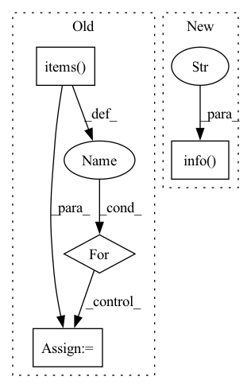

Pattern ID :230
Before Change
runs Runtime (self.runtime) to process incoming requests.
logger.info(f"Serving {len(self.module_backends)} blocks:")
for block_name, backend in self.module_backends.items():
num_parameters = sum(p.numel() for p in backend.module.parameters() if p.requires_grad)
parameter_msg = f"{num_parameters} trainable parameters" if num_parameters else "frozen"
logger.info(f"{block_name}: {backend.module.__class__.__name__}, {parameter_msg}")
After Change
return
if self._should_choose_other_blocks():
logger.info("Swarm is imbalanced, server will load other blocks" )
break // Stop serving this set of modules
finally:
self.module_container.shutdown()
In pattern: SUPERPATTERN
Frequency: 3
Non-data size: 4
Instances Fragment ID: 1694683
Project Name: bigscience-workshop/distributed-bloom
Commit Name: 149f433763e2eb332b16de91cf47809579706001
Time: 2022-10-12
Author: hxrussia@gmail.com
File Name: src/server/server.py
M Class Name: Server
N Class Name: Server
M Method Name: run(1)
N Method Name: run(1)
M Parent Class: threading.Thread
N Parent Class: threading.Thread
M File Name: src/server/server.py
N File Name: src/server/server.py
M Start Line: 73
M End Line: 99
N Start Line: 148
N End Line: 190
Before Change
recs = exp.list_recorders()
recs_flt = {}
for rid, rec in recs.items():
params = rec.load_object("task.pkl")
if rec.status == rec.STATUS_FI:
if filter_func is None or filter_func(params):
rec.params = params
recs_flt[rid] = rec
// groupAfter Change
pred = pd.concat(pred_l).sort_index()
reduce_group[k] = pred
self.logger.info(f"Collect {len(reduce_group)} predictions in {self.exp_name}" )
return reduce_group
def collect_latest_records(
self, Fragment ID: 1694682
Project Name: microsoft/qlib
Commit Name: 0df88c07f64549ab27aa924a7001e5a8e7beecc7
Time: 2021-03-11
Author: lzh222333@163.com
File Name: qlib/workflow/task/collect.py
M Class Name: TaskCollector
N Class Name: TaskCollector
M Method Name: collect_predictions(3)
N Method Name: collect_predictions(3)
M Parent Class:
N Parent Class:
M File Name: qlib/workflow/task/collect.py
N File Name: qlib/workflow/task/collect.py
M Start Line: 14
M End Line: 60
N Start Line: 69
N End Line: 106
Before Change
sorted(example_uris.keys()))
with self._make_beam_pipeline() as pipeline:
for split, example_uri in example_uris.items():
output_examples_split_uri = artifact_utils.get_split_uri(
[output_examples], split)
inferrer_step.set_output_uri(output_examples_split_uri)
_ = (pipeline
| "ReadData[{}]".format(split) >>
beam.io.ReadFromTFRecord(
file_pattern=io_utils.all_files_pattern(example_uri))After Change
logging.info("Model on %s was not blessed", model_blessing.uri)
return
else:
logging.info(
"Model blessing is not provided, exported model will be "
"used." )
model = artifact_utils.get_single_instance(
input_dict[MODEL])
model_path = path_utils.serving_model_path(model.uri) Fragment ID: 1694687
Project Name: maiot-io/zenml
Commit Name: 1f86eb5ae94e0dc71caf2edadd7a41f84a41fa35
Time: 2021-03-18
Author: bariscandurak@hotmail.com
File Name: zenml/components/bulk_inferrer/executor.py
M Class Name: BulkInferrerExecutor
N Class Name: BulkInferrerExecutor
M Method Name: Do(4)
N Method Name: Do(4)
M Parent Class: base_executor.BaseExecutor
N Parent Class: base_executor.BaseExecutor
M File Name: zenml/components/bulk_inferrer/executor.py
N File Name: zenml/components/bulk_inferrer/executor.py
M Start Line: 49
M End Line: 101
N Start Line: 63
N End Line: 111